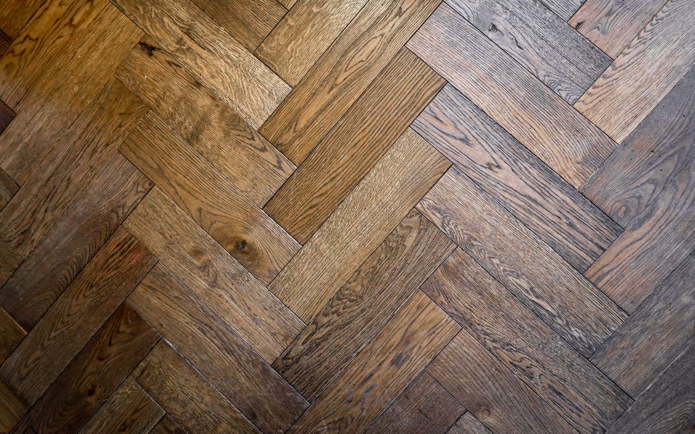

Sens de pose · 9 min
Quel sens de pose choisir pour son parquet ?
Cinq critères suffisent à trancher, et ils ne se valent pas. Voici l'ordre dans lequel les regarder.
Guides
Choix du parquet, préparation du support, sens de pose, motifs et finitions. Huit guides écrits pour être utiles sur le chantier, pas pour remplir une page — chacun se lit en moins de dix minutes.
Sens de pose · 9 min
Cinq critères suffisent à trancher, et ils ne se valent pas. Voici l'ordre dans lequel les regarder.

La règle la plus citée du parquet. Encore faut-il savoir ce qu'elle recouvre et quand elle cesse d'être vraie.

La plupart des désordres viennent du support, pas du parquet. Voici les contrôles à mener avant la première lame.

Une coupe d'onglet sépare ces deux motifs. Elle change le rendu, le prix et la pose.

Huit erreurs reviennent en boucle sur les chantiers. Toutes se corrigent avant la pose, aucune après.

Le débat porte rarement sur le bon terrain : ce qui change vraiment, c'est la stabilité dimensionnelle.

Le couloir est le seul espace où la règle de la lumière passe au second plan.

Poser dans la largeur élargit vraiment — à condition d'en accepter les coupes.
Aucun guide ne correspond à ce filtre pour le moment.
Par où commencer
Les guides suivent l’ordre d’un chantier. Chaque étape ferme des options que la suivante ne rouvrira pas.
Massif ou contrecollé, largeur de lame, essence, motif et sens de pose : ce qui se décide sur le papier et ne se rattrape plus une fois la commande partie.
02Planéité, humidité, ragréage, acclimatation des lames dans la pièce : la plupart des désordres viennent du support, pas du parquet.
03Calepinage, coupes de rive, jeu de dilatation en périphérie : les gestes qui décident du rendu fini, et que les tutoriels déroulent pas à pas.
Questions fréquentes
Cinq questions qui reviennent avant la lecture des guides, et les réponses courtes.
Par le sens de pose si la pièce est déjà choisie, par la préparation du support si le chantier est proche. Les deux se lisent en moins de vingt minutes, et ce sont les deux décisions qu’on ne reprend pas après coup.
Un contrecollé de faible épaisseur, posé collé : il transmet mieux la chaleur et bouge moins qu’un massif. Vérifiez la résistance thermique admise et le mode de pose que le fabricant autorise pour la référence retenue.
En cuisine, oui, avec une finition résistante et des joints soignés près des points d’eau. En salle de bains, cela demande une essence adaptée et une pose collée étanche : le guide de préparation détaille les contrôles.
Un massif se ponce plusieurs fois tant que l’épaisseur au-dessus des rainures le permet. Un contrecollé n’offre que l’épaisseur de son parement, souvent deux à quatre millimètres : au-delà, c’est un remplacement.
Comptez l’acclimatation des lames dans la pièce, 48 heures au minimum, et le séchage d’un ragréage s’il y en a un. C’est ce délai, et non la pose elle-même, qui décale le plus souvent un chantier.
Décrivez votre pièce, votre support et le rendu recherché en quatre étapes, sans laisser vos coordonnées : vous voyez aussitôt vers qui vous tourner.